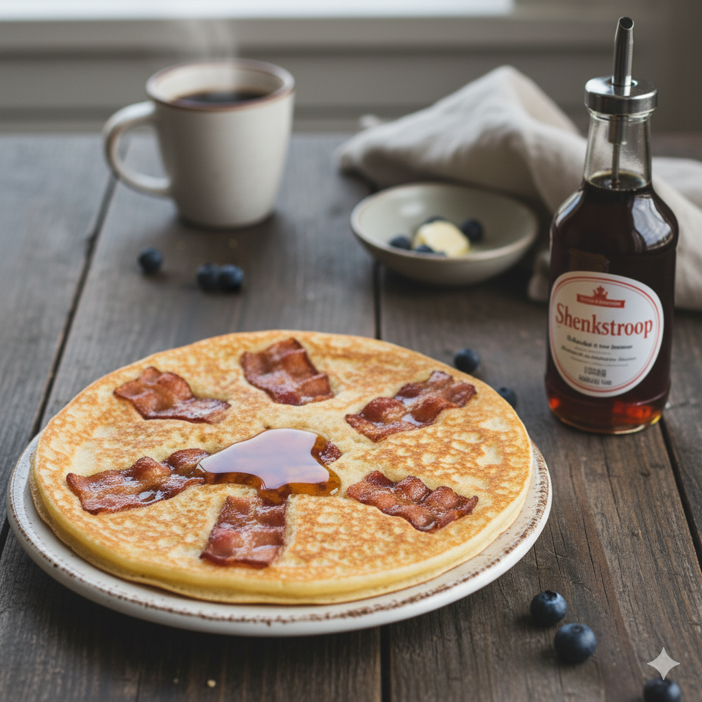

Home
Dutch Bacon Pancakes

Description
This is a Dutch classic. Pancakes with Bacon and Syrup.
Perfect for a Sunday breakfast or make it for dinner like the Dutch so.
Ingrediënts
- 500 grams flour
- 2 eggs
- 800 grams milk
- pinch of salt
- smoked bacon
- Dutch pancake syrup, for topping
Steps
- Combine the flour and half of the milk.
- Stir with a whisk untill all the milk is absorbed.
- Add the eggs and whisk until combined.
- Whisk in the rest of the milk and add salt to taste.
- Melt a knub of butter in the skillet.
- Cover the bottom of the pan with the pancake mixture.
- Quickly add 2 strips of bacon on top of the pancake.
- Flip the pancake and bake 1 min on the other side.
- Serve the pancake with the Syrup.